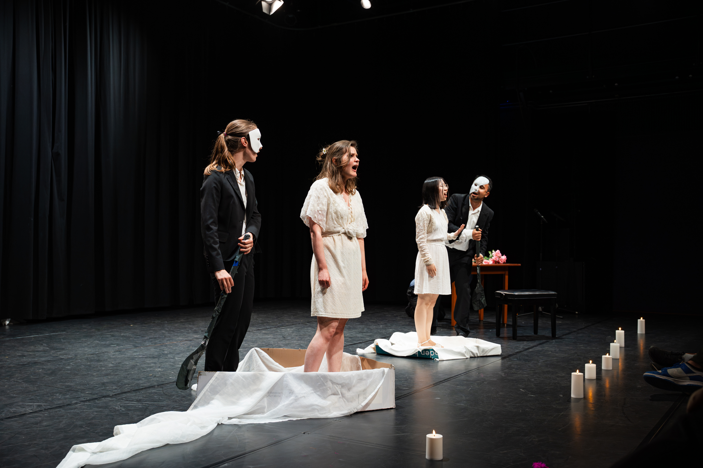
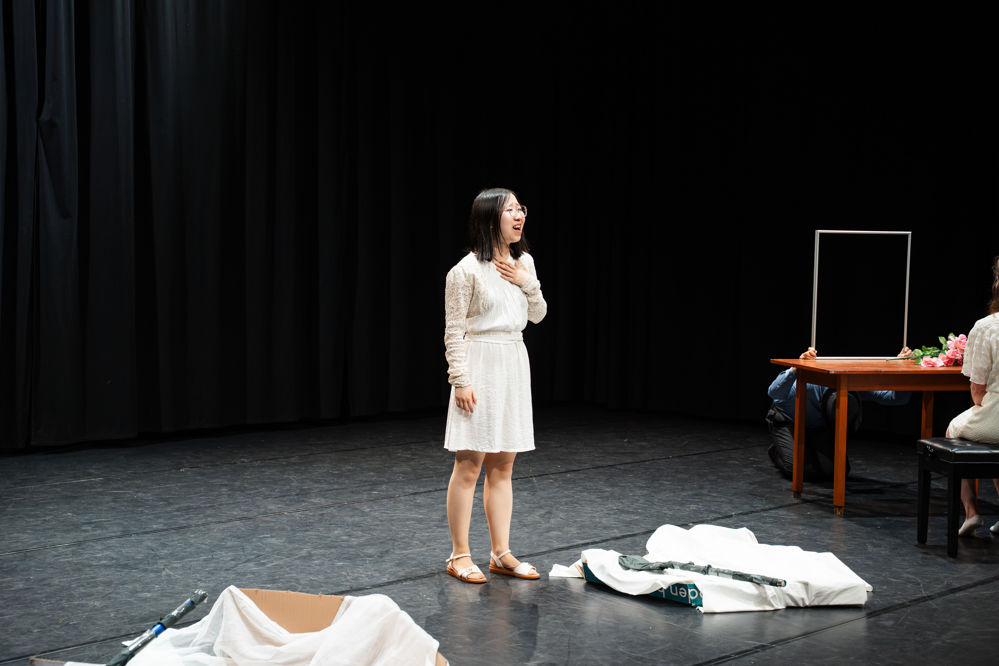
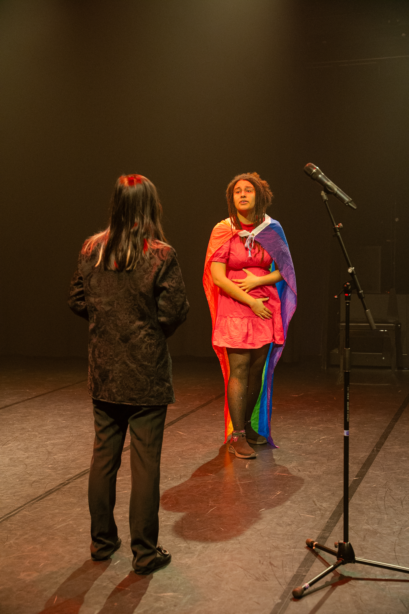
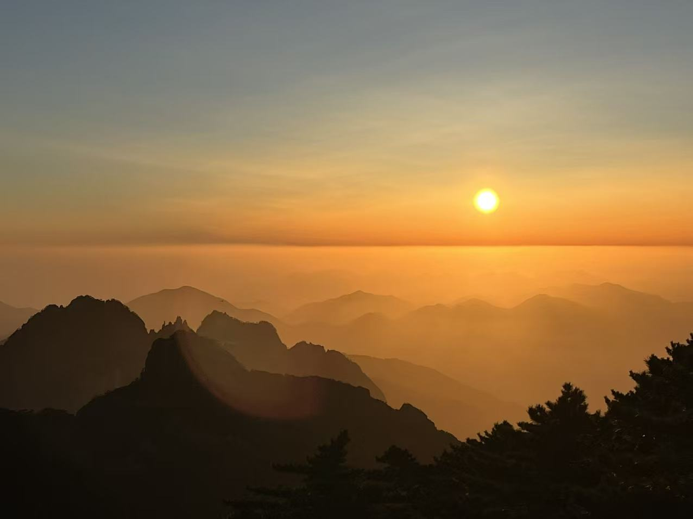
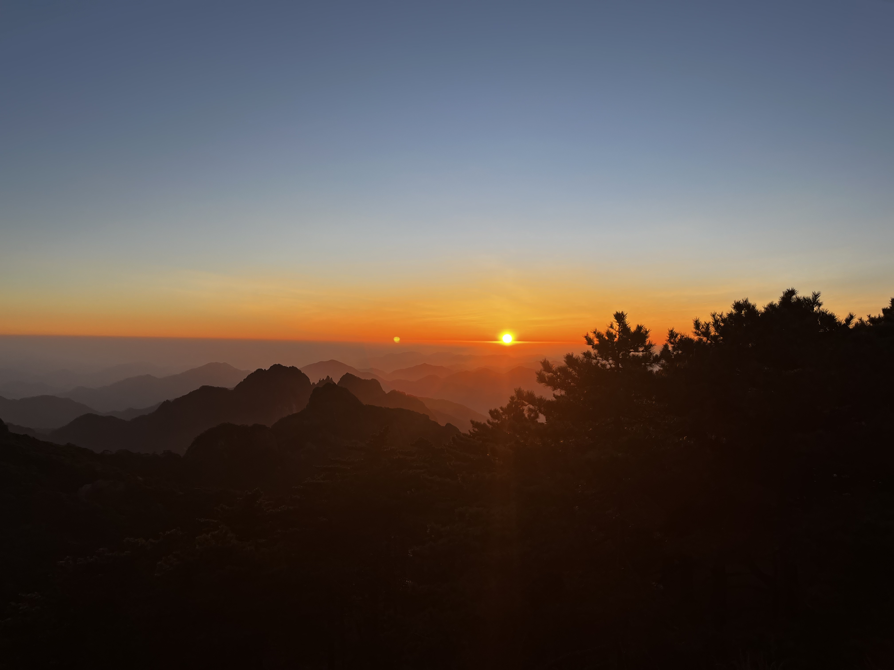

My hometown is Huangshan city, a world-famous tourist city in China. It is home to Huangshan (the Yellow Mountain, 黄山）, a UNESCO world heritage site most renowned for its majestic mountain range （奇山）, unique rock formation （异石）, sea of clouds （云海）, and hot springs （喷泉）. The three best-known mountain peaks are the Lotus Peak （莲花峰）, Bright Peak （光明顶） and Celestial Peak （天都峰）.
Huangshan covers much of the historical and cultural region of Huizhou （徽州）. Huizhou is a famous mercantile region for green （黄山毛峰） and black tea leaves （祁门红茶） and the four treasures of the study （文房四宝） which include the brush, ink, paper and ink stone （笔墨纸砚） in ancient China. A famous saying in Huangshan is "Born in Huizhou, they say, was a sign of bad karma in a past life—for by thirteen or fourteen, you would be sent out to seek your fortune." （前世不修，生在徽州。十三四岁，往外一丢。）, which means children born in Huizhou often have to leave their homes at an early age to go out into the wider world and build their fortunes as Huizhou merchants （徽商）. Tourist spots in Huangshan that are representative of the Huizhou culture （徽文化） involve the ancient villages Xidi （西递） and Hongcun （宏村）. Now, these beautiful villages are popular spots for landscape painting and photography.


